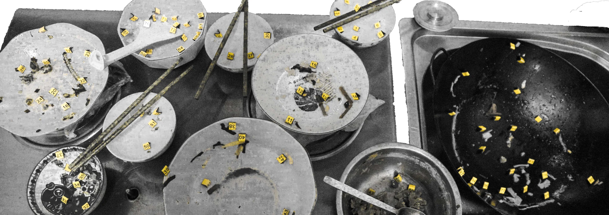
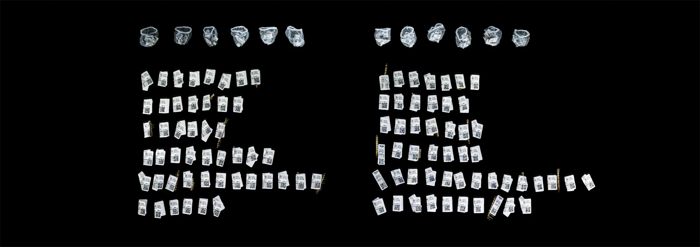
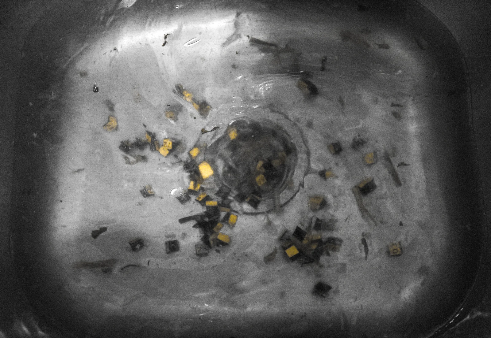
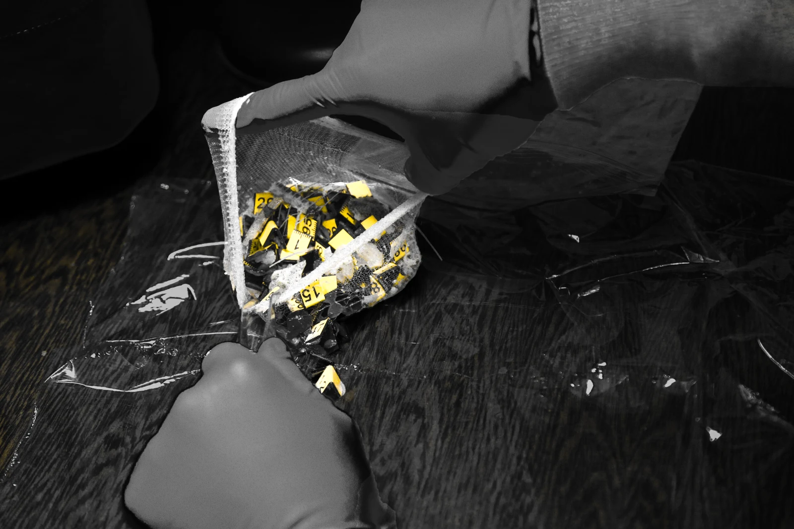
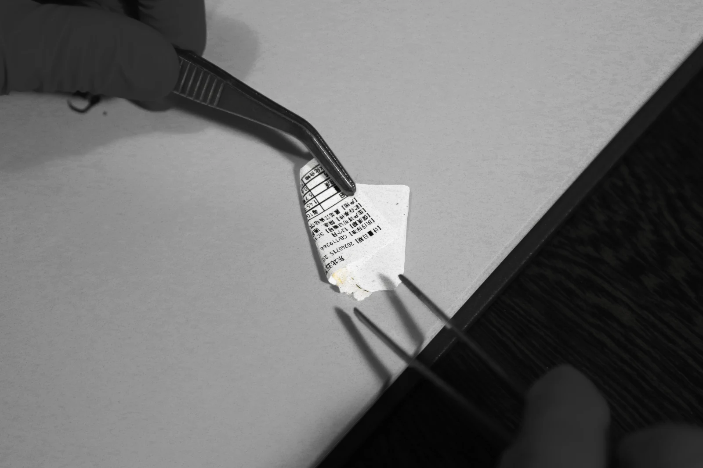
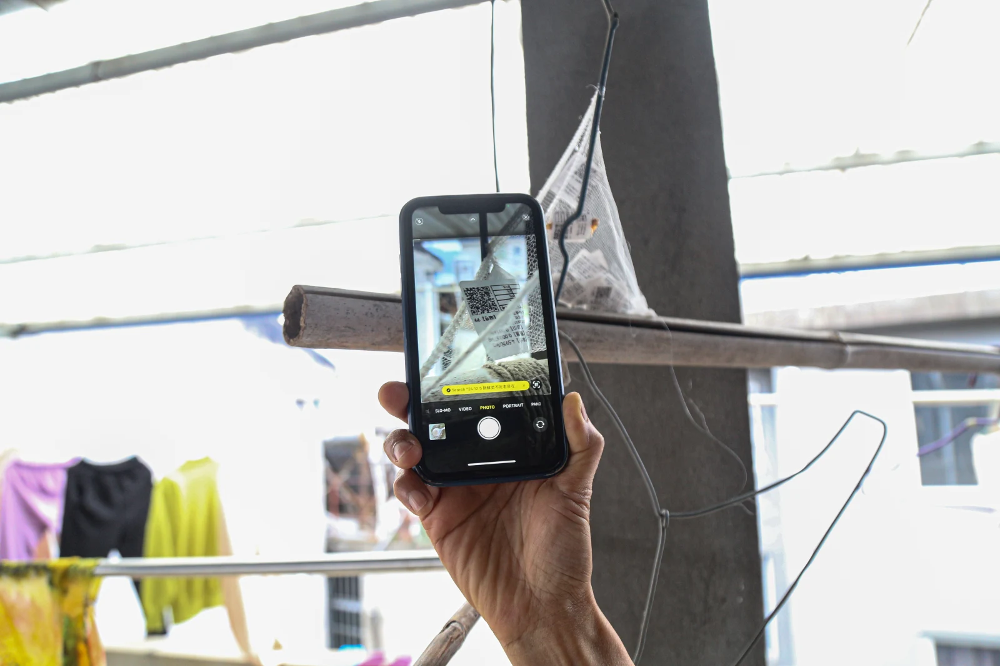
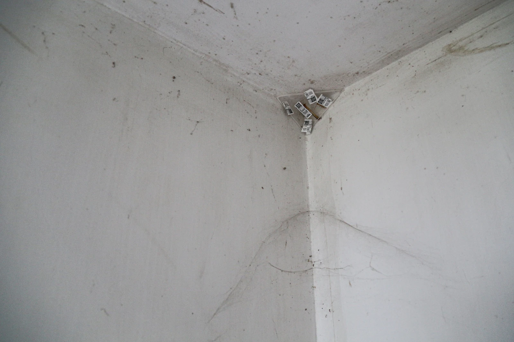
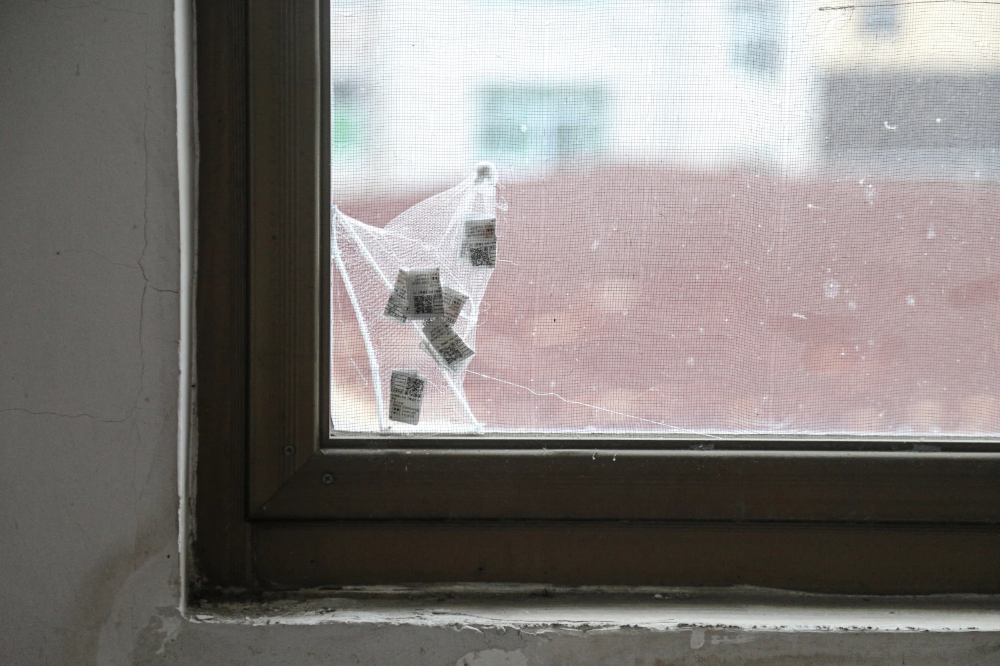
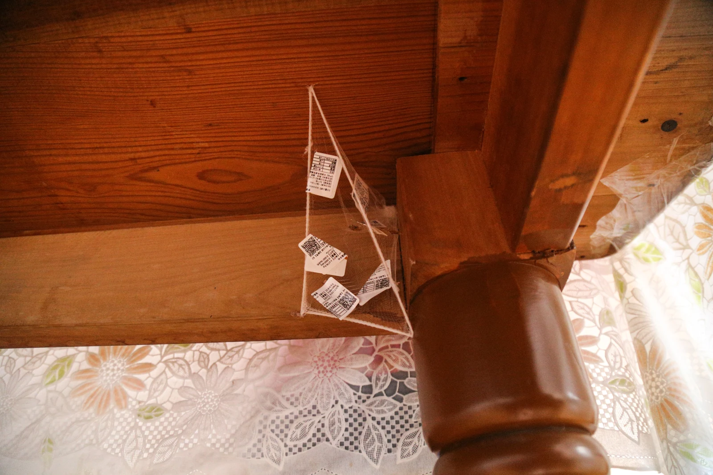

项目文件 / 家庭调查
01
Land of Fish and Rice / 鱼米之乡
家庭餐后残余被处理为近似取证的材料，用以显露家庭结构中不可见的张力与权力关系。









01-05
调查序列
-
01
总览
《鱼米之乡》从家庭餐后留下的残余物开始。米粒、鱼骨和其他痕迹被收集、分类、称量并标记，家庭废弃物被转化为一种观察系统。
-
02
证据收集
剩余物被直接标记在餐盘和桌面上，借用证据标签的语言。一次饭局成为动作、选择和未完成家庭协商的记录。
-
03
分类与称量
米粒、鱼骨和其他痕迹被清洗、分离、装袋并单独称量。这个过程给予脆弱残余物一种受控的档案结构。
-
04
价签编码
超市式价签和二维码标签被应用到收集物上。家庭废弃物被翻译为价值、数量与编码流通的系统。
-
05
回到家庭场景
被编码的物重新回到家庭角落，在那里累积为安静的、未被解决的家庭语言痕迹。